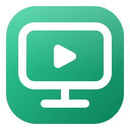

VideoBridge
Compartilhe tela e câmera com seus amigos, direto entre os computadores. Sem anúncios, sem plano pago.
Seu nome
Criar sala
ou entrar numa sala
Entrar
Configurações
VideoBridge
Compartilhar sala
O que você está compartilhando
Texto / código
prioriza nitidez
Equilibrado
nitidez e fluidez
Vídeo / jogo
prioriza fluidez
Resolução
360p
480p
HD (720p)
Full HD (1080p)
2K (1440p)
Taxa de quadros
15 fps
30 fps
60 fps
Bitrate
Automático
Padrão (~2 Mbps)
Alto (~4 Mbps)
~6 Mbps
~8 Mbps
~10 Mbps
Personalizado…
Codec
H264
VP9
VP8
AV1
Áudio por aplicativo
Escolha de quais aplicativos o som é transmitido. O próprio VideoBridge nunca é transmitido (evita eco).
Novos aplicativos entram transmitindo
Ninguém está transmitindo ainda.
Compartilhar tela
Compartilhar câmera
Escolha o que compartilhar
Selecione uma ou mais telas/janelas. Nada é capturado sem a sua escolha.
O áudio do sistema é transmitido
junto com a tela
e para assim que você parar de compartilhá-la.
Compartilhar áudio do sistema junto com a tela
Cancelar
Compartilhar
Alterações não salvas
Você mudou configurações e ainda não salvou. Deseja salvar antes de fechar?
Continuar editando
Descartar
Salvar
Configurações
Geral
Áudio e vídeo
Discord
Rede
Seu nome
Máximo de participantes
?
Efeitos sonoros
Volume dos efeitos
Testar
Início
Iniciar com o Windows
Iniciar minimizado
?
Dispositivos
Câmera
Microfone
Ganho do microfone
Áudio da transmissão
Compartilhar o áudio do sistema junto com a tela
?
Áudio por aplicativo
?
Dispositivo alternativo
?
Perfil
Mostrar a sala no meu perfil do Discord
?
Aviso em um canal (webhook)
Publicar a sala no canal
?
URL do webhook
?
Página de convite
?
Conexão
Relay de sinalização
?
Quando a conexão direta falha
Servidores TURN (opcional)
?
Compartilhar o TURN com a sala
?
Executar diagnóstico
Salvar
Fechar